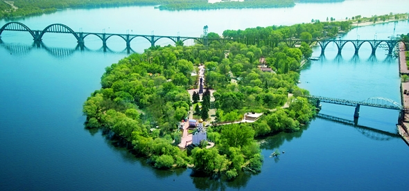

Одна из самых легендарных и загадочных достопримечательностей Днепропетровска - Монастырский остров Небольшой островок, который можно легко обойти пешком вдоль и поперек, находится в центре Днепропетровска и является частью парка им. Т. Шевченко. Дорога к нему – сплошное удовольствие, ведь путь лежит через пешеходный мостик над Днепром, выйти к которому можно либо через старый парк, либо по живописной набережной.
Остров окутан тайнами и легендами. Впервые упоминания о нем можно встретить в Житии Святого Феодосия, он описывается как самая северная точка, куда смог дойти со своими проповедями Андрей Первозванный.
Исторические перипетии
Свое имя остров получил благодаря византийскому монастырю, который был основан здесь в 9 веке. Документальных свидетельств не сохранилось, лишь обрывки и отдельные упоминания в различных дорожных записях путешественников.
В 1240 году, после того, как монголо-татары разгромили русское войско, они прошли по всем христианским святыням. Оборонявшие храм монахи пали от сабель и стрел ханского войска. Монастырь был разрушен татарами и предан запустению, а ханское войско отправилось на Киев град. В это же время исчезает и древнерусское поселение у Старых Кодаков, да так, что даже не остается никаких следов. Кстати в городе есть еще место называемое Новым Кодаком, в возведена Николаевская церковь.
Жизнь возвращается
Спустя почти 400 лет возведение польской крепости в Кодаках, привлекла поселенцев на острова. В связи с быстрым ростом населения в этих местах особое внимание было оказано Монастырскому острову, и в 1765 году казакам выдали предписание строго следить за лесонасаждениями, которые поселенцы пытались вырубать.
Постройка самого Екатеринослава, центром которого планировали сделать нагорную часть, заинтересовала князя Потемкина, решившего разместить здесь университет и построить мост через пролив. В то время первым архитектором, разрабатывающим план города, был француз Клод Геруа, он хотел на Монастырском острове устроить места для гуляния. Но планам воплотиться было не суждено, и остров надолго был забыт.
Непростая судьба острова
В 19 веке в Екатеринославе было учреждено садоводческое училище, которым передали все парки города. Остров в 1820 году также был передан училищу для разведения смолистых деревьев. Однако спустя почти 20 лет его продали в частные руки.
Его владельцем стал Рябинин, который приобрел остров за 4 тысячи рублей. Спустя некоторое время его продали Бурякову. Остров менял не только хозяев, но и имена, вплоть до середины 20 века его называли Богомоловским. Весьма изменился и вид достопримечательности Украины - все деревья окончательно были уничтожены, растительность ухудшилась.
В конце 20 века в северной части острова был возведен православный храм, который гармонично вписался в общий ландшафт острова. Помимо церкви, здесь расположен днепропетровский зоопарк и аквариум.